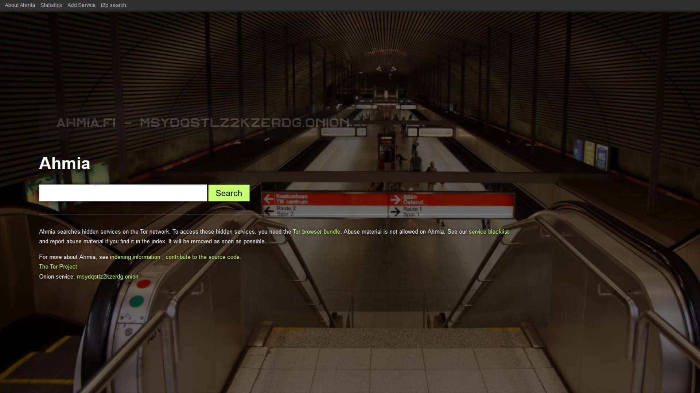
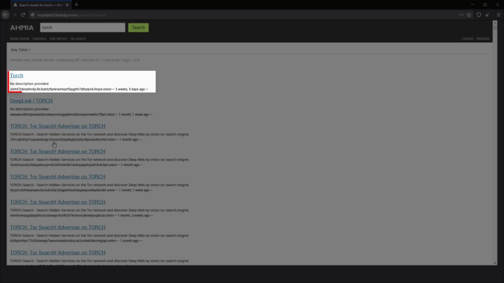

Ahmia.fi
Onion Service: juhanurmihxlp77nkq76byazcldy2hlmovfu2epvl5ankdibsot4csyd.onion
Thanks to this search engine, we can search the websites on Darknet via clearnet. The biggest advantage of this search engine is that it has an easy-to-remember domain name that also publish on clearnet. For example, when you don't have an address of any website, you can easily find the address information of many websites on the darknet through this web address. Even if you are not that satisfied with the results of this search engine, you can use this tool to find the address of another darknet search engine that you find useful. In short, you can use the Ahmia.fi search engine as an easy-to-remember and easy-to-access gateway to start surfing on the darknet.
Let's go to the address on clearnet to give an example of its usage. I go to its address on clearnet because it's easy to remember. I type ahmia.fi in my browser's address bar and confirm it.

As you can see, we have come across a very simple web page. Just enter the keywords of the website you want to find in the search bar and search. In addition, as you can see at the bottom, there is the onion service address of the search engine on the darknet, and you can use this address if you wish.


As a result of my search, many links with the same name but different addresses have been listed. Unfortunately there is no sure way of knowing which of these are real and which are fake. All users can report the maliciously address if they are want. If the number of report is high, the address is removed from the list. However, don't rely too much on this feature, as the abuse reporting system works quite ineffective. To visit real addresses, you need to keep your own address list. This way you will have a safe list of addresses over time. You can use search engines for new discoveration. When you discover a new secure address, simply add it to your own address list.
Since I already know the address, I click the relevant link when I see the address.

Frankly, I don't find other search engines very useful compared to the ahmia.fi search engine. However, you can still experience various search engines and decide which one works better for you. For example, let's try the torch search engine.